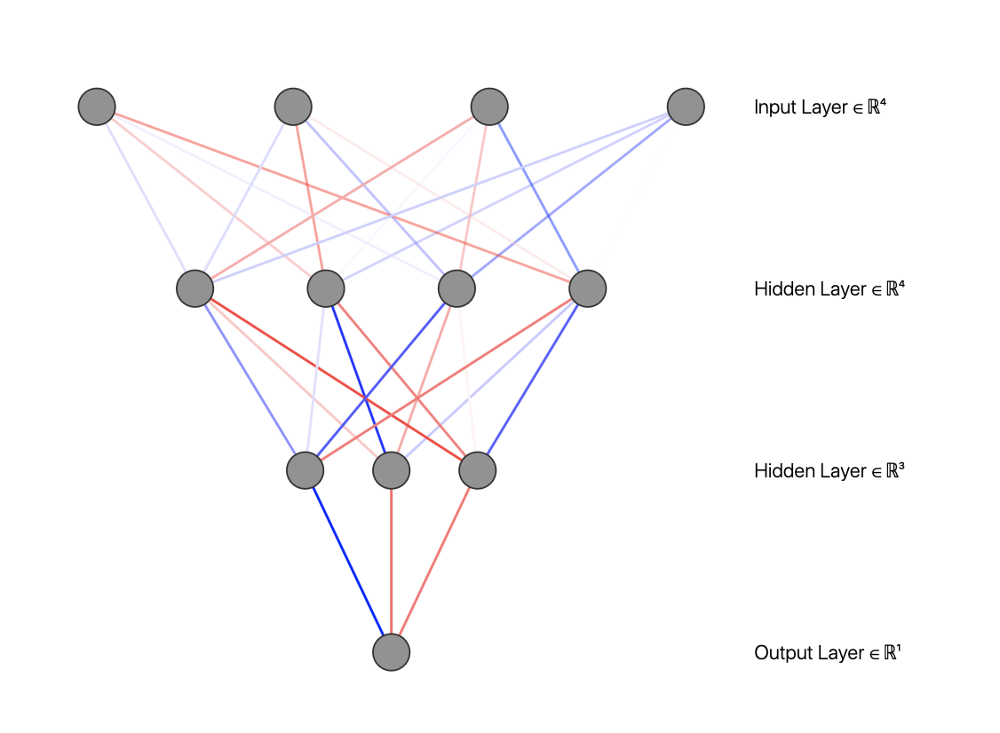

Back Propagation
At this point we have already formulized the cost function. Now we need to calculate the cost function and its derivatives. We need to compute now:
$$ J(\theta), \frac{\partial}{\partial \theta_{ij}^{(l)}}$$
Assume that we only have one training example
$$ (x,y)$$
Forward Propagation
$$ a^{(1)} = x$$
$$ z^{(2)} = \theta^{(1)} a^{(1)} $$
$$ a^{(2)} = \sigma(z^{(2)}), \text{ add } a_0^{(2)}$$
$$ z^{(3)} = \theta^{(2)} a^{(2)}$$
$$ a^{(3)} = \sigma(z^{(3)}) \text{ add } a_0^{(3)}$$
$$ z^{(4)} = \theta^{(3)} a^{(3)}$$
$$ a^{(4)} = \sigma(z^{(4)}) = h(x) = \text{ the hypothesis }$$

Back Propagation
At each time we do a forward propagation where we calculate $$a^{(l)}$$ we also calculate
$$ \delta^{(l)}$$ which is named as the error of nodes in layer l. But this time, we have to
propagate backwards. We will start with the last one and then calculate the error of previous layers.
$$ \delta^{(4)} = a^{(4)} - y$$
$$ \delta^{(3)} = (\theta^{(3)})^T \delta^{(4)} \odot g'(z^{(3)})$$
$$ \delta^{(2)} = (\theta^{(2)})^T \delta^{(3)} \odot g'(z^{(2)})$$ The multiplication symbol is called the Hadamard Product and it basically means that we multiple the matrices element by element. We do not have any error in the first layer since it is the input layer. Without regularization, we have
$$ \frac{\partial}{\partial \theta_{ij}^{(l)}} J(\theta) = a_j^{(l)} \delta_i^{(l+1)}$$
Back Propagation Algorithm
We have the training set
$$ t = \{(x^{(1)},y^{(1)}),\dots,(x^{(m)},y^{(m)})\}$$ We set initially;
$$ \Delta_{ij}^{(l)} = 0$$ for all indices. Then we will do for all training set, (usually with a for loop), the following set of operations, in order.
$$ a^{(1)} = x^{(i)}$$
$$ \text{FP and compute for all l } a^{(l)}$$
$$ \text{compute all } \delta^{(l)}$$
$$ \Delta_{ij}^{(l)} = \Delta_{ij}^{(l)} + a_j^{(l)} \delta_i^{(l+1)}$$ Now we have the necessary values to calculate finally the derivatives all at once. Finally we have,
$$ D_{ij}^{(l)} = \frac{1}{m} \Delta_{ij}^{(l)} + \lambda \theta_{ij}^{l}$$ for non zero j values. For zero j value,
$$ D_{ij}^{(l)} = \frac{1}{m} \Delta_{ij}^{(l)}$$ These are the derivatives of the cost function. Now finally we have achieved to have both the cost function and all the necessary derivatives. After this point we will apply gradient descent and get the optimized hypothesis.
Dimensional Remarks
Let us have an architecture so that we have 10 nodes in the input layer, 1 hidden layer with 10 nodes and one output layer with 1 node. Then the dimensions will be:
$$ d(\theta^{(1)}) = d(\theta^{(2)})= d(D^{(1)}) =10 \times 11$$
$$ d(\theta^{(3)}) = 1 \times 11$$
Gradient Checking
For only one value of our parameters, we can check if we are on the right track. What we can do is to see if the below expression
$$ \frac{d J}{d \theta} \approx \frac{J(\theta + \epsilon) - J(\theta - \epsilon)}{2\epsilon}$$ is close to our
result from backpropagation. This is a basic calculus definition of a derivative in the limit. In our case we need $$ \epsilon \approx 10^{-4}$$ This can be used for debugging and checking if we are on the right track.
Initialize the weights randomly in a small interval.
This will help broke the possible symmetry that may cause a repetition.
Training a Neural Network
- Design a neural network architecture. Conventionally, all the hidden layers have the same number of nodes.
- Randomly initialize the weights.
- Implement forward propagation.
- Compute the cost function.
- Implement back propagation.
- Get the derivatives of the cost function.
- Apply gradient checking.
- Apply gradient descent with respect to the weights.